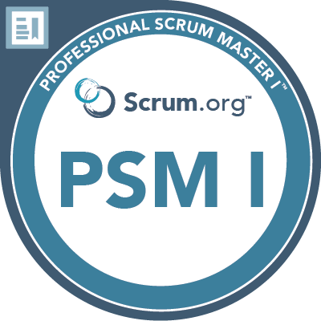
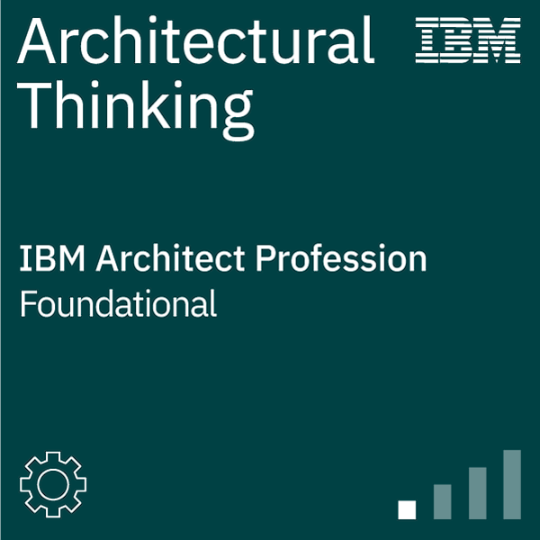
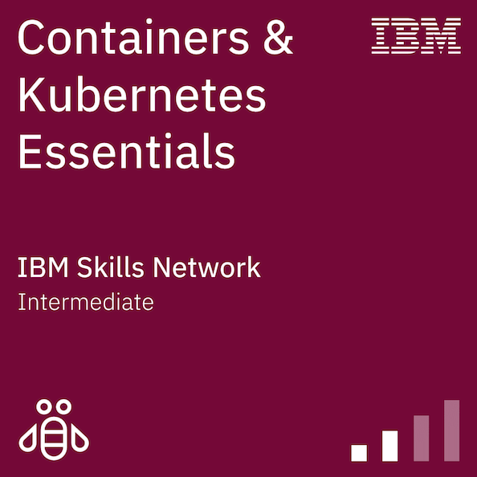
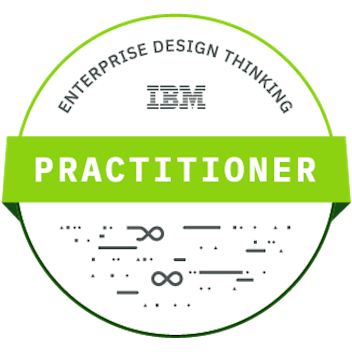
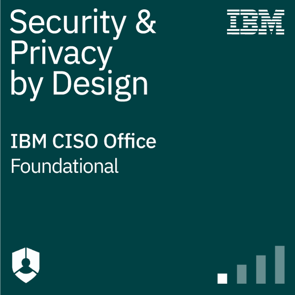
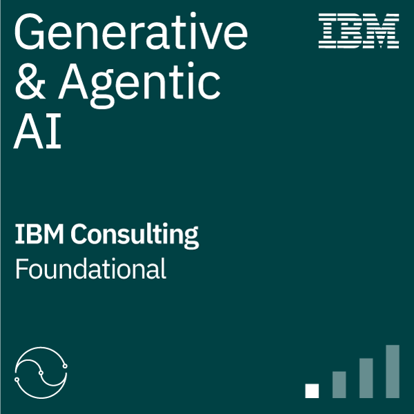

Zertifizierungen & Badges
Extern geprüft
 ISTQB® Certified Tester Foundation Level (CTFL) 4.0
ISTQB® Certified Tester Foundation Level (CTFL) 4.0

Professional Scrum Master™ I (PSM I)IBM Professional Training

Architectural Thinking
Containers & Kubernetes Essentials
Enterprise Design Thinking Practitioner
Security and Privacy by Design Foundations
IBM Generative & Agentic AI FoundationAlle Credentials sind über das Credly-Profil verifizierbar.
Fähigkeiten & Technologien
Backend & Programmiersprachen
| Java (Core, Concurrency & Multithreading, Shared Memory) |
| Spring Framework & Spring Boot |
| Jakarta EE, JPA / Hibernate |
| C, Haskell (Funktionale Programmierung) |
Frontend & Webtechnologien
| TypeScript, JavaScript (ES6+) |
| Angular, Vue.js |
| HTML5, CSS3 |
| XML (DTD, Schema), XPath, XQuery, DOM/SAX, XSLT, JSP |
Datenbanken & Datenmodellierung
| PostgreSQL, PL/pgSQL & SQL |
| Relationale Datenmodellierung, EER-Diagramme & Relationale Algebra |
| Transaktionsmanagement & Mehrbenutzersynchronisation |
Systeme, Architektur & Methoden
| Verteilte Systeme & Netzwerkprotokolle (Sockets, TCP/UDP) |
| Algorithmen, Datenstrukturen & Laufzeitabschätzung |
| Linux & UNIX-Betriebssystemgrundlagen |
| Security-Grundlagen (Netzwerksicherheit, Secure Development) |
| Versionskontrolle mit Git |
Bachelorstudium Software & Information Engineering (TU Wien)
Auszug relevanter Lehrveranstaltungen und Kernleistungen:
| Verteilte Systeme (Übung) | Sehr gut (1) |
| Softwareprojekt-Beobachtung und -Controlling | Sehr gut (1) |
| Wissenschaftliches Arbeiten (Seminar) | Sehr gut (1) |
| Algebra und Diskrete Mathematik (Übung) | Sehr gut (1) |
| Statistik und Wahrscheinlichkeitstheorie (Übung) | Sehr gut (1) |
| Denkweisen der Informatik | Sehr gut (1) |
| Software Engineering & Projektmanagement (Projekt) | Gut (2) |
| Introduction to Security | Gut (2) |
| Datenmodellierung | Gut (2) |
| Web Engineering | Gut (2) |
| Objektorientierte Modellierung | Gut (2) |
| Semistrukturierte Daten | Gut (2) |
| Daten- und Informatikrecht | Gut (2) |
Die vollständige Leistungsübersicht aller absolvierten Lehrveranstaltungen ist im Sammelzeugnis einsehbar.
Download Sammelzeugnis (PDF)